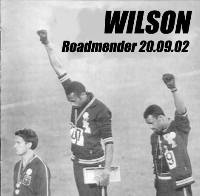

|
|
 |
 |
Gigs
::
2002
:: Sep20
|

Venue: The Roadmender
Where: Northampton
When:
Sunday, Friday 20th, 2002
Headstone Says..
Headlining a 6 band bill - £3:00 - Open late
|
Visitors' comments for this page
|
Roadmender
Wilson Headstone
- NN1
25Sep2002 7:40 AM
(21 years 302 days ago)
Friday 20th September 2002 - NORTHAMPTON
So today is the day that Wilson break out of the pubs and make their debut on a full sized stage in a proper venue, to wit Northampton s own Roadmender Centre. This fairly charmless council-sponsored venue has played host to the likes of Paul Weller, The Manic Street Preachers, Primal Scream and The Damned. Back in the day it was the local port of call for Spacemen 3, the Perfect Disaster and, yes, the JBC. More recently, after a multi-million pound facelift, it has been the venue for some top performances from Culture, Ernest Ranglin, Julian Cope and the mighty Tuvan ensemble Yat-Kha. Gregory Isaacs was here too recently, but I wasn t naïve enough to think that my promise of a place on the guest list would work, so I missed that one.
Our date is not being promoted by the club itself. It is the work of an organisation called The Voice , which appears to be a faintly educational affair, run by an amiable Scouse hobbit called Bill. This shameless optimist has booked no fewer than six acts for this evening s entertainment. Wilson are to headline on the main stage. The other groups are largely unknown to our posse. Some of them are made up entirely of early teens, so we assume that these must represent Bill s educational constituency.
Whatever, this marks a definite step up in Wilson s local profile, and we have been working hard to make it a good one.
First, however, there is the small matter of retrieving Kathy Schaer from the United States, where she has been visiting her family. At about one o clock I receive a phone call from Kath. She is back in the country (hooray!), but there is a snag. Somebody has just thrown himself onto the railway line and all the trains back to Northampton have stopped. Honestly, it s just self-self-self for some people, isn t it?
Fortunately enough, the railways sort themselves out for once and by five o clock Kath is back in NN1 and ready to rumble.
Stevie G and I are the first to arrive at the venue, where we meet James, our soundman for the night. As I go to shake his hand, he declares: You re famous!
It turns out that he has heard endless reports about Stranger Tractors from the old Tractors didgeridoo player, Bolly, who went on to work as the bar manager at the venue. James also tells us to expect no more than a line-check before playing. Gently, calmly, firmly I explain to him that if he wants a full bill tonight, Wilson will be doing a full sound check. The message is received and, it would appear, understood.
No sooner have we established this than Kath arrives at the venue, closely followed by Agent Cooper. While James organises a soundcheck for a band called Sophomore (who have a rather more uh traditional line-up than Wilson), we head for the car park to enjoy the balmy evening with some special cigarettes. We have not been there long before our attention is drawn to a car on the busy main road beneath us, which is emitting odd electronic squawks and bleeps. Somebody in the car has some kind of gimmicky loud-hailer device, which they are using to full effect down there in the Friday evening traffic. Nutter , we conclude.
A few moments later we hear the strange noises again. They turn out to be issuing from MC Bot, who is hanging out of the window of Curtis car clutching a brightly coloured bullhorn. The party is about to kick off.
In the corner of the car park we gather around Russ motor, skinning up, hanging out and playing The Streets at maximum volume: as intimidating a gang of middle-aged sociopaths as you could hope to avoid. The other groups are arriving by now. Some of them are so young that they are being delivered in cars by fond fathers, who actually look about the right age to join Wilson. There is much amusement as one of the dads manhandles a huge speaker cabinet across the car park while The Streets chant Let s push things forward!
A soundcheck is arranged and runs smoothly enough. I find myself more or less alone stage right. This gives me two major advantages: (i) I have plenty of space in which to operate, and (ii) I can crank my amp as loud as I want without putting anybody off their stroke.
Soundcheck completed, MC Bot and Russ set out to find the dressing room, returning minutes later to advise us that there are to be no dressing rooms tonight. Given that the contract for tonight offers no rider, no guest list, no guaranteed wages and no dressing room, I wonder what exactly was the point of asking me to sign it. It s not as though there was anything on offer to sign for, after all. Still, we are not despondent. We smoke up and split up, heading off to feed.
It is about half past seven as I leave the venue. I am astonished to see dozens and dozens of teens flooding into the front bar. Later, my pal s daughter will ask me What are all these children doing here? Right now, though, I am just glad to see that there is going to be an audience. (It later turns out that there were about 280 paying punters.)
On my return from having a little dinner in The Fish, I am unable to find any of the band at the venue. Eventually I find Curtis and Stevie G. They have simply gone ahead and commandeered a dressing room regardless. Also in the dressing room is a harassed-looking gentleman in a suit, who, Curt tells me, is here to film the show. After a brief consultation with the venue staff he is allowed access to the balcony, where he spends the rest of the evening with his fingers in his ears.
Also in the area are Jonny Mattock from Lupine Howl and Mark Refoy, freshly returned from his world tour playing guitar for the Pet Shop Boys. It s his first chance to catch Wilson live and we are pleased to see him.
I watch a little bit of Sophomore; very strong traditional British indie played very loud indeed, with much head-shaking down in the front row of the punters. Very much Not My Thing, but expertly delivered and rightly popular with the youngsters. Passing into the front bar I see another band, a kind of rustic Oasis, fronted by a strangely-shaped young singer with even stranger sideburns. I have no idea what they were called, but they were quite entertaining all the same.
Then it is time for the Bad Muthafuckas. After a brief introduction from Bill we go full-tilt into Quality People and boy, is it loud! There is a young man down the front lying flat-out on the floor. James the soundman sees him and comes rushing over, alarmed and ready to help. As he reaches the casualty, the boy just gets up, shrugs and walks away. Weird.
The set rumbles on. We play well and make maximum use of the available space. At one point I look up to see Curtis, miles away from his instrument and his microphone, just leaping about in the middle of the stage. Bot is switching between his mic and his bullhorn according to some strange inner Bot Logic. Despite being jet-lagged to the point of utter bewilderment, Kath lays down huge basslines that enter your body through your feet. After the show Stevie G and I agree that we have never cranked our amps so loud.
The set runs: Quality People; Yellow Pages; Burn Hollywood Burn; Hippy Shit (particularly rocking version tonight); Istanbul Connection; Play It All Night Long; Every Saturday Night; Critters; Dark Agenda. It is well received and, according to Kath McGinty, about the same volume as a jumbo jet taking off indoors. We have taken on the Roadmender and pulled it off.
After the show a member of the Roadmender staff approaches us and asks us to support a band called Skindread on Saturday 12th October. Seeing this as our wages for the night, we say yes. So that was all worthwhile, then.
On the other hand, as we leave the stage we discover that the bar has closed. This after we had been told that it would stay open until at least one o clock. We resolve to pack up and head for the nearby Charles Bradlaugh, which stays open until one and which has recently taken to serving Pilsner Urquell.
On the way out I find Bill being menaced by some tiny youths. Despite presumably having had the same mealy-mouthed contract as ourselves, they are demanding to be paid. Things turn comically ugly as one tiny youth advises Bill that he is going to set the Music Union (sic) onto poor Bill. This does seem a touch unlikely. If this tiny youth is in the Musicians Union, then I am Marie of Romania.
We pass a pleasant hour or so in the Bradlaugh before taking off. Kath is going home for some long-overdue rest. Russ and Curt also head for home. The rest of us have a brief after-show back at Shakespeare Mansions. Mindful of our gig tomorrow, we turn in around four o clock.
|
|
|
{kind=link}